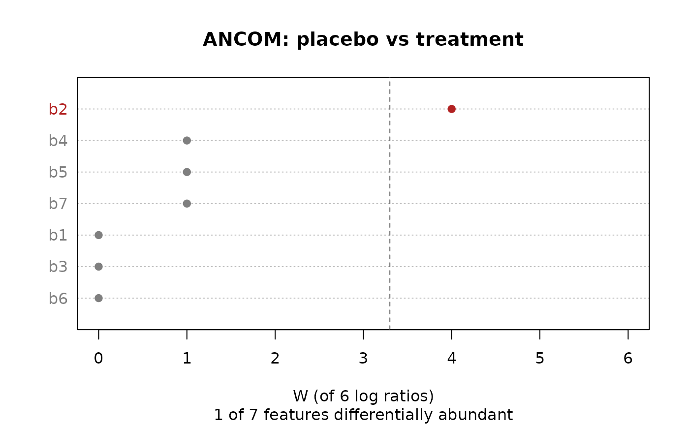

Finds features whose abundance differs between groups without assuming that the samples' totals mean anything (Mandal et al. 2015). Every log ratio between two features is tested for a difference between the groups; a feature whose abundance really changed makes most of its log ratios differ. Each feature's \(W\) is the number of its log ratios that differ significantly, and the features with a large \(W\) are declared differentially abundant.
Usage
ancom(
counts,
groups,
data = NULL,
margin = 1L,
pseudocount = NULL,
alpha = 0.05,
tau = 0.02,
theta = 0.1,
p_adjust = "holm",
sig_test = "anova",
cpus = n_cpus()
)Arguments
- counts
A numeric matrix of non-negative abundances (samples \(\times\) features), or any of the objects listed under Input Types. Counts, proportions, and the output of
replace_zeros()are all accepted: each sample's scale cancels out of the log ratios.- groups
Each sample's group: a vector or factor with one value per sample, matched to the samples in
countsby name when both are named, else in the same order. Or, whendatais given, the name of one of its columns (or a vector with one value per row ofdata). Every distinct value is a group, numbers included; there must be at least two. A factor's unused levels are dropped.- data
Sample metadata: a data frame with one row per sample, holding the columns named in
groupsorstrata. Rows are matched to the samples incountsby row name, and rows for other samples are ignored; without row names, they must be in the same order as the samples. Default:NULL.- margin
The margin containing samples.
1if samples are rows,2if samples are columns. Ignored whencountsis a special object class (e.g.phyloseq). Default:1- pseudocount
Added to every value before taking logs.
NULL(the default) adds nothing whencountshas no zeros, and otherwise uses half the smallest non-zero value, with a warning.0adds nothing, and is an error whencountshas zeros. See Zeros.- alpha
The significance level of each log ratio's (adjusted) p-value. Strictly between 0 and 1. Default:
0.05.- tau
How much the proportion of features above a cutoff may change between neighbouring cutoffs for the cutoff to count as stable (see Details); small values are conservative. Strictly between 0 and 1. Default:
0.02.- theta
The smallest largest \(W\), as a proportion of the number of features, for anything to be declared differentially abundant. Strictly between 0 and 1. Default:
0.1.- p_adjust
How to adjust each feature's p-values for testing its log ratios with every other feature:
'holm'(the default),'bonferroni','BH'(or'fdr'),'BY', or'none', as instats::p.adjust(). Each feature's p-values are one family (see Details).- sig_test
The test of each log ratio across the groups:
'anova'(the default; scikit-bio's"f_oneway"), a one-way ANOVA, which is Student's t-test for two groups; or'kruskal', the Kruskal-Wallis rank sum test, which the original ANCOM paper used.- cpus
How many parallel processing threads should be used. The default,
n_cpus(), is the CPU cores this R process may use, within any limits set on it. Results are the same for anycpus.
Value
A data frame of class c('ecodive_ancom', 'data.frame'), one row
per feature, in the order of counts, with columns:
feature: the feature's name (its index, as text, whencountshas no feature names).W: the number of other features whose log ratio with this one differs significantly between the groups (integer,0to \(D - 1\)).reject:TRUEfor the features declared differentially abundant (scikit-bio'sSignif).
Attributes: method ("ancom"), groups (the groups, in order), sig_test, p_adjust,
alpha, tau, theta, cutoff (the chosen \(\nu\), as a proportion
of the number of features, or NA when nothing could be rejected
because the largest \(W\) was below theta), and pseudocount (the
pseudocount used; 0 for none).
ANCOM gives no effect size and no p-value per feature, only \(W\)
and a decision. For effect sizes and their uncertainty, see
dirmult_ttest(); for bias-corrected estimates of each feature's log
fold change, with p-values, see ancombc() and ancombc2().
Details
With \(L = \log(x + c)\) (natural logs, \(c\) the pseudocount) and \(D\) features:
For every pair of features \(i < j\), the log ratio \(L_i - L_j\) of each sample is tested across the groups with
sig_test, giving \(p_{ij} = p_{ji}\).Each feature's \(D - 1\) p-values are adjusted for multiple testing as one family (
p_adjust).\(W_i\) is the number of features \(j\) with adjusted \(p_{ij} < \alpha\).
If the largest \(W\), as a proportion of \(D\), is below
theta, nothing is rejected. Otherwise, with \(c_0 = \max(W)/D\), five cutoffs \(c_0 - 0.05, \ldots, c_0 - 0.25\) are tried: the proportions of features with \(W > D \cdot \mathrm{cutoff}\), and the changes between neighbouring proportions, decide which cutoff \(\nu\) is stable (the first change belowtaupicks \(c_0 - 0.10\), and so on, as in scikit-bio). Features with \(W \ge \nu D\) are rejected.
Matching scikit-bio. The results (\(W\) and the decisions) are
those of scikit-bio's ancom() (0.7.4), whose rules are followed
exactly, including two of its quirks:
Each feature's family of p-values for the adjustment includes a 0 for the feature against itself. For Holm this changes nothing; for Bonferroni, BH and BY it makes the adjustment slightly more stringent (\(D\) tests instead of \(D - 1\)). In R terms, feature \(i\)'s adjusted p-values are
p.adjust(c(0, p[i, -i]), p_adjust)[-1].Its cutoffs are \(c_0 - \)
numpy.linspace(0.05, 0.25, 5), whose third value is one rounding step above0.15.
A log ratio that is constant within every group but differs between
groups has \(F = \infty\) and \(p = 0\) with sig_test = 'anova', as
with SciPy's f_oneway(); one that is the same in every sample has no
p-value (NaN, as in SciPy), and is left out of the feature's family and
never counted in \(W\). The Kruskal-Wallis test uses average ranks for
ties and SciPy's tie correction, with ties by exact equality, as SciPy's
kruskal(); a log ratio with every value tied has no p-value (SciPy
sometimes returns an infinite statistic there, by rounding, and so a
p-value of 0). The F and \(\chi^2\) p-values are R's stats::pf() and
stats::pchisq(), which agree with SciPy's to about 1e-13. The F
statistics come from two-pass sums of squares; SciPy's one-pass ones
differ from them by up to about 1e-12 (relative), from rounding.
Groups are sorted as scikit-bio sorts them (sort(method = 'radix')),
unless groups is a factor, whose levels' order is kept. The order
changes nothing but the groups attribute.
scikit-bio's percentiles table (each group's percentiles of each
feature's raw abundance) is not returned: use stats::quantile().
ANCOM-II's covariate adjustment and structural-zero detection (Kaul et
al. 2017) are not offered.
Computation. The \(D(D - 1)/2\) tests run in parallel C, each
straight from its log ratios (no \(n \times D\) log table is made for a
sparse counts), and the p-values take \(4 D^2\) bytes: 5,000
features need 100 MB. Results are identical for any number of cpus.
Zeros
Logs of zero are undefined, so zeros need replacing first. With
pseudocount = NULL (the default), no pseudocount is used when
counts has no zeros; otherwise half the smallest non-zero value is
added to every value, with a warning. The recommended input is a table
with its zeros replaced by replace_zeros(), which has none and is
used as it is. (scikit-bio's ancom() refuses zeros; the original
ANCOM paper added a pseudocount of 0.001.)
Same names in other packages
scikit-bio (Python) has ancom(), which this matches. R's ANCOMBC
package has ancom() too, an implementation of ANCOM-II with its own
zero handling and defaults; it is not what this function reproduces.
Input Types
The counts parameter is designed to accept a simple numeric matrix, but
seamlessly supports objects from the following biological data packages:
phyloseqrbiomSummarizedExperimentTreeSummarizedExperiment
For large datasets, standard matrix operations may be slow. See
vignette('performance') for details on using optimized formats
(e.g. sparse matrices) and parallel processing.
References
Mandal, S., Van Treuren, W., White, R. A., Eggesbø, M., Knight, R., & Peddada, S. D. (2015). Analysis of composition of microbiomes: a novel method for studying microbial composition. Microbial Ecology in Health and Disease, 26, 27663.
Kaul, A., Mandal, S., Davidov, O., & Peddada, S. D. (2017). Analysis of microbiome data in the presence of excess zeros. Frontiers in Microbiology, 8, 2114.
Examples
# scikit-bio's example: b2 is more abundant under placebo.
x <- rbind(
c(12, 11, 10, 10, 10, 10, 10),
c( 9, 11, 12, 10, 10, 10, 10),
c( 1, 11, 10, 11, 10, 5, 9),
c(22, 21, 9, 10, 10, 10, 10),
c(20, 22, 10, 10, 13, 10, 10),
c(23, 21, 14, 10, 10, 10, 10) )
colnames(x) <- paste0('b', 1:7)
grp <- rep(c('treatment', 'placebo'), each = 3)
res <- ancom(x, grp)
res
#> # A data.frame: 7 × 3
#> # ANCOM: placebo vs treatment
#> feature W reject
#> <chr> <int> <lgl>
#> 1 b1 0 FALSE
#> 2 b2 4 TRUE
#> 3 b3 0 FALSE
#> 4 b4 1 FALSE
#> 5 b5 1 FALSE
#> 6 b6 0 FALSE
#> 7 b7 1 FALSE
#> # Attributes: method, groups, sig_test, p_adjust, alpha, tau, theta, cutoff,
#> # pseudocount
plot(res)

# A table with zeros: replace them first.
grp <- c('oral', 'oral', 'other', 'other')
ancom(replace_zeros(ex_counts, 'mult'), grp, sig_test = 'kruskal')
#> # A data.frame: 6 × 3
#> # ANCOM: oral vs other
#> feature W reject
#> <chr> <int> <lgl>
#> 1 Streptococcus 0 FALSE
#> 2 Bacteroides 0 FALSE
#> 3 Corynebacterium 0 FALSE
#> 4 Haemophilus 0 FALSE
#> 5 Propionibacterium 0 FALSE
#> 6 Staphylococcus 0 FALSE
#> # Attributes: method, groups, sig_test, p_adjust, alpha, tau, theta, cutoff,
#> # pseudocount